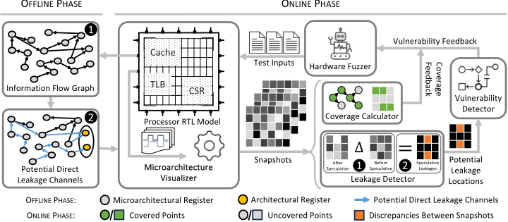
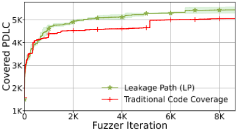

推测执行中的迷失与发现：混合式推测执行漏洞检测
论文针对处理器推测执行造成的微架构信息泄漏难以在流片前自动检出的问题：现有方法局限于已知攻击向量、只覆盖部分微架构部件、依赖 golden reference model 或需要硬件插桩。作者提出 Specure，一种将硬件 fuzzing 与 Information Flow Tracking (IFT) 结合的 pre-silicon 验证方法：离线阶段用 Pyverilog 从 RTL 静态提取信息流图 IFG 与潜在直接泄漏通道 PDLC；在线阶段用带特殊种子的 fuzzer 生成激励，按周期抓取信号 snapshot，借助 RoB 信号构建 Misspeculation Table 定位推测窗口，用窗口起止 snapshot 差分检出泄漏并与 PDLC 交叉定位根因，同时提出新的 Leakage Path (LP) 覆盖率反馈引导 fuzzing。在 RISC-V BOOM 上，Specure 检出现有 fuzzer 无法发现的模拟 (M)WAIT 与 Zenbleed 漏洞，Spectre 检出快 20×，搜索空间探索快 6.45×，代价是比 TheHuzz 高 82% 的运行时开销。该方法无需 golden model 与硬件修改，但仅覆盖 direct channel 泄漏。
现有自动化检测推测执行漏洞的方法存在多种缺陷：局限于已知攻击向量、只覆盖特定微架构部件而非整个 processor-under-test (PUT)、存在状态爆炸、需要额外硬件组件或依赖 golden reference model，导致灵活性差、人工投入大。由于硬件漏洞无法像软件那样远程打补丁，必须在流片前自动检出推测执行导致的信息泄漏漏洞。
Specure 是 hardware-agnostic、非侵入、无需 golden model 的混合验证方法，分两阶段：Offline Phase 用 Pyverilog 解析 PUT 的 Verilog RTL 生成信息流图 IFG（信号为顶点、连接为边），通过解析 RISC-V ISA 规范自动提取架构寄存器，再用反向 DFS（复杂度从 O(V^2) 降到 O(V)）提取所有从微架构寄存器到架构寄存器的潜在直接泄漏通道 PDLC；Online Phase 由 Hardware Fuzzer 生成激励（除随机种子外，加入覆盖分支误预测、branch target injection、return stack buffer 操纵等场景的特殊种子），Microarchitecture Visualizer 按时钟周期生成微架构/架构信号 snapshot 并提取 code coverage 与波形，Leakage Detector 用 RoB 的 unsafe、brupdate 等信号构建 Misspeculation Table (MST) 确定每个误推测窗口的起止周期，通过窗口起止 snapshot 差分发现潜在泄漏点，再与 PDLC 列表交叉引用定位泄漏根因（从而免除 golden model），Coverage Calculator 基于 PDLC 信号在推测窗口内的翻转次数计算新的 Leakage Path (LP) 覆盖率并反馈引导 fuzzer。
BOOM 的 IFG 提取约 9 分钟（每个 PUT 仅需一次），含 162,631 个信号、428,245 条连接；PDLC 提取约 3 分钟，共 9,048 条潜在直接泄漏通道
模拟的 (M)WAIT 与 Zenbleed 漏洞分别在约 14 小时和 4.5 小时内被触发并定位根因（归类为 CWE-1342）；SpecDoctor 在 24 小时内未能检出
Spectre variant 1/2 检出比 state-of-the-art 快 20×：无初始种子 1.5 小时、带推测窗口种子 49 分钟（对比 SpecDoctor 报告的 31 小时）
LP 覆盖率引导的 fuzzer 达到相同覆盖仅需 798 次迭代，code coverage 引导需 5149 次，搜索空间探索快 6.45×；最坏情况下 code coverage 落后 10.2%
相比 TheHuzz 存在 82% 的运行时开销（源于 snapshot 处理与覆盖率计算）
区别于 SpecDoctor（基于已知攻击选定插桩模块做差分 fuzzing）、Introspectre（需人工准备 Meltdown gadgets）以及依赖 golden reference model 比对或通用 code coverage 反馈的 fuzzer（TheHuzz 等），Specure 将 IFT 与硬件 fuzzing 融合：用 snapshot 差分替代 golden model 比对、无需 PUT 插桩或硬件修改、不局限于已知攻击向量，并提出基于静态 IFT 的细粒度 LP 覆盖率取代通用 code coverage 反馈来引导漏洞搜索。
相关度级别：medium
命中能力域：2.4 设计验证方法学 | 2.7 EDA/验证自动化与 AI 辅助
理由：论文面向处理器推测执行安全漏洞，团队服务的 LPDDR/HBM/UCIe 等存储与互连 IP 不含乱序/推测执行机制，漏洞类别本身不直接命中团队产品与技术栈。但其验证方法学对 2.4 与 2.7 有明确借鉴价值：以覆盖率反馈驱动的硬件 fuzzing 可作为 UVM 约束随机之外的补充激励手段，LP 覆盖率展示了基于关键信号路径激活度的细粒度覆盖率设计思路（区别于单纯 code coverage），Pyverilog 静态 IFG 提取与 snapshot 差分定位根因可迁移到 IP 的自动化信号流分析、影响域分析与 debug 方法学，符合团队沉淀可复用方法学与自动化能力的方向，故评为 medium 而非 high。
建议动作：作为方法参考存档
arXiv:2410.22555v1 [cs.CR] 2024年10月29日
推测执行中的“失物招领”：混合式推测漏洞检测
Mohamadreza Rostami †，Shaza Zeitouni †，Rahul Kande ‡，Chen Chen ‡，Pouya Mahmoody †，
Jeyavijayan (JV) Rajendran ‡，Ahmad-Reza Sadeghi †
† 达姆施塔特工业大学，德国黑森州达姆施塔特 ‡ 德克萨斯农工大学，美国德克萨斯州学院站
微体系结构攻击对现代处理器构成了一个具有挑战性且持续存在的威胁，其利用处理器固有的设计漏洞来泄露敏感信息或危害系统。尤其值得关注的是，作为性能提升基本组成部分的推测执行（Speculative Execution）对此类攻击的易感性。
我们提出 Specure，这是一种新颖的流片前验证方法，将硬件模糊测试与信息流跟踪（Information Flow Tracking, IFT）相结合，以应对推测执行泄露问题。集成 IFT 带来了相对于现有模糊测试方法的两项重要且非平凡的增强：i）无需黄金模型即可自动检测微体系结构信息泄露漏洞；ii）一种新颖的泄露路径（Leakage Path）覆盖率度量，用于高效的漏洞检测。Specure 在 RISC-V BOOM 处理器上识别出了此前被忽视的推测执行漏洞，并以比现有模糊测试技术快 6.45 × 的速度探索漏洞搜索空间。此外，Specure 检测已知漏洞的速度快 20 ×。
关键词：硬件模糊测试、推测执行漏洞
Mohamadreza Rostami†、Shaza Zeitouni†、Rahul Kande‡、Chen Chen‡、Pouya Mahmoody†、Jeyavijayan (JV) Rajendran‡、AhmadReza Sadeghi†。2024年。《推测中的迷失与寻回：混合式推测漏洞检测》。发表于第61届ACM/IEEE设计自动化会议（DAC '24），2024年6月23日至27日，美国加利福尼亚州旧金山。ACM，美国纽约州纽约，6页。https://doi.org/10.1145/3649329. 3658469
允许免费制作本作品全部或部分的数字或硬拷贝副本供个人或课堂使用，前提是这些副本并非以营利或获取商业优势为目的而制作或分发，且副本首页载有本声明及完整的引用信息。本作品中归作者以外各方所有的组件，其版权必须得到尊重。允许在注明出处的情况下进行摘录。如需以其他方式复制、再版、发布到服务器或重新分发至列表，则须事先获得特定许可和/或支付费用。请向 permissions@acm.org 申请许可。DAC '24，2024年6月23日至27日，美国加利福尼亚州旧金山
© 2024 版权归所有者/作者所有。出版权已授权给 ACM。
硬件是计算系统的基础，因此，不安全的硬件会使所有关键系统面临风险。特别是，基于处理器微体系结构设计与实现缺陷的攻击构成了严重威胁，攻击者可利用硬件提取敏感数据或危害整个计算系统 [2, 3, 8, 10, 17, 18, 20]。随着设计的不断进步和攻击者的不断演变，我们面临着日益复杂的微体系结构攻击 [2, 3]。一类关键的微体系结构攻击利用了推测执行（Speculative Execution），它是处理器性能提升的基本组成部分 [2, 3, 17, 20]。推测执行技术在指令完成之前预测指令结果，从而降低内存延迟并缓解流水线停顿。然而，推测执行可能导致错误的路径预测，从而需要对瞬态指令所做的更改进行回滚。尽管进行了回滚，某些影响仍会持续存在，这正是推测漏洞的根本原因。这些漏洞已被用于危害系统安全，攻击者借助不同的通道将信息从微体系结构层泄露到体系结构层。这些通道包括直接通道，例如体系结构寄存器（如高级向量扩展（AVX）寄存器 [3]、EFLAGS 寄存器 [20] 以及内存映射输入/输出（MMIO）接口 [17]），以及计时侧信道/隐蔽信道 [2, 8]。研究人员和制造商正在研究新的防御手段和对策，以防范这些攻击。然而，与能够以数字方式打补丁的软件漏洞不同，硬件补丁通常需要物理修改或更换。因此，在制造之前检测出此类漏洞势在必行。
然而，现有的推测执行漏洞自动化检测方法存在各种缺陷：它们 (i) 通常仅限于已知的攻击向量 [11, 15, 16]，因而错失了检测未知漏洞及其根本原因的机会；(ii) 只关注特定的微体系结构元件，而非覆盖整个被测处理器（processor-under-test, PUT）[16]；(iii) 受到状态爆炸问题的困扰 [14]；(iv) 需要额外的硬件组件 [11]；或者 (v) 需要黄金参考模型 [19]。这些局限性降低了灵活性，并增加了人工工作量和硬件开销。尽管如此，一种更全面、更可扩展的硬件漏洞检测技术对于满足该领域不断发展的需求至关重要。
电子邮件：† {mohamadreza.rostami,shaza.zeitouni,pouya.mahmoody,ahmad.sadeghi}@trust.tu-darmstadt.de ‡ {rahulkande,chenc,jv.rajendran}@tamu.edu
ACM ISBN 979-8-4007-0601-1/24/06...$15.00
我们的贡献。我们提出了一种新颖的流片前验证方法 Specure，有效解决了推测执行漏洞检测中的关键问题。Specure 是一种硬件无关且非侵入式的解决方案，能够在实际规模的处理器中检测推测执行漏洞，而无需额外的硬件、修改或使用黄金参考模型。通过将硬件模糊测试与信息流跟踪（Information Flow Tracking, IFT）相结合，我们的方法能够高效地识别并量化处理器设计中的直接信道，揭示潜在的信息泄漏路径，并精确定位其在硬件设计中的根本原因。为克服协同集成方面的挑战，我们开发了一种表达这些信道的策略，并为模糊测试器建立了一种新颖的覆盖率反馈机制。所引入的覆盖率度量与此前的那些仅以提升代码覆盖率为目标、盲目依赖运气来触发漏洞的方法有显著不同，从而确保对处理器设计及潜在漏洞的全面探索。我们的主要贡献包括：
自动检测直接信道及其根本原因：Specure 利用 IFT 将处理器微体系结构组件与体系结构组件之间的直接信道泄漏可视化。这是通过推导处理器的信息流图（Information Flow Graph, IFG）并提取从微体系结构寄存器到体系结构寄存器的路径来实现的。
新颖的覆盖率度量。我们针对推测执行泄漏提出了一种独特的泄漏路径（Leakage Path, LP）覆盖率。与传统基于代码覆盖率的模糊测试器相比，LP 覆盖率具有两大优势：(i) 得益于其细粒度的基于 IFT 的引导，它能够识别新的未知漏洞；(ii) 它比其他模糊测试器更高效地发现漏洞。实现。我们使用开源与商用 RTL 模拟器实现了 Specure。为展示其有效性，我们采用最先进的开源乱序处理器 BOOM [12] 作为待测处理器（PUT）。
评估。我们通过覆盖率分析和漏洞检测在 BOOM 上验证了我们的方法。借助新颖的覆盖率度量，Specure 对漏洞搜索空间的探索范围扩大了 6.45 倍，检测已知漏洞的速度比现有模糊测试技术快 20 倍。我们进一步验证了我们的方法能够检测近期发现且现有方法仍无法检测的漏洞 [3, 20]。为此，我们在 BOOM 上成功复现了 x86 架构中的推测执行漏洞 [3, 20]。
正如我们将在评估章节（§ 4）中详细说明的那样，近期商用处理器上出现的严重推测执行漏洞均源自先进的微架构特性 [2, 3, 17, 18, 20]。必须强调的是，由于开源 RISCV 处理器中缺乏这些特性，我们在 BOOM 上模拟了两个近期出现的严重漏洞的行为。此演示旨在凸显我们的混合模糊测试器与新型覆盖率度量在发现和分析此类漏洞根本原因方面的有效性。
推测执行攻击的直接信道。直接信道使攻击者能够将微架构信息直接泄露到体系结构层面，而无需依赖时序或功耗侧信道，这类侧信道需要精确的测量和侧信道接口 [2, 3, 17, 20]。Zhang 等人 [20] 展示了对近期 Intel 处理器上存在漏洞的 umonitor 和 umwait 指令的利用。这些指令无需中断即可优化功耗状态，使得信息能够在瞬态执行（transient execution）期间泄露。Zenbleed [3] 利用了 AMD CPU 中的寄存器清零优化。当在误预测的推测窗口内调用清零指令 vzeroupper 时，它将把寄存器向量的高位清零，并释放该向量的依赖项，使其可被受害线程分配。Zenbleed 正是通过模糊测试被发现的，这表明模糊测试在检测大规模设计中的漏洞方面是有效的。
模糊测试（Fuzzing 或 fuzz testing）向被测软件/硬件提供测试输入，以发现传统测试方法可能遗漏的故障或漏洞 [7]。模糊测试器（fuzzer）生成随机的、畸形的或异常的输入，以测试程序如何处理这些输入。初始的测试输入集合，即种子（seeds），既可以自动生成，也可以由验证工程师手工构造。在每一轮模糊测试中，模糊测试器通过位/字节翻转、交换、删除或克隆等操作对上一轮的最优测试输入进行变异，以生成新的输入。凭借其自动化、成本效益和可扩展性，模糊测试在安全社区中获得了广泛关注 [11, 13, 16, 19]。
针对推测漏洞的模糊测试。Specdoctor [11] 提出了一种流片前（pre-silicon）模糊测试器，该测试器利用带有不同秘密值的差分模糊测试来检测推测执行漏洞。它基于已知攻击识别出潜在易受攻击的模块，并在模糊测试过程中监测这些模块是否出现差异。然而，Specdoctor 对已知潜在易受攻击模块的受限选择标准限制了其确认可利用性的能力，并且会遗漏漏洞。另一方面，Introspectre [15] 检测 Meltdown 类漏洞的方法需要投入大量人工工作来准备 Meltdown gadget，即代码片段。模糊测试器仅负责随机选择 gadget、为 gadget 内的参数分配随机值，以及将 gadget 连接起来构成测试用例。需要注意的是，这两项工作 [11, 15] 均在 BOOM 上进行了评估。[16] 提出了一种流片后（post-silicon）模糊测试器，用于检测 x86 CPU 中的推测漏洞。为了识别漏洞，[16] 判断模糊测试器能否在数据缓存状态不同的情况下诱导出相同的体系结构状态。该工作仅限于检测 Spectre 类漏洞，并且只能捕获 L1 数据缓存（L1 Data cache）中的时序泄露。
信息流跟踪（Information Flow Tracking, IFT）通过监控系统内的信息流动，确保敏感数据不会被泄露或遭到不当访问。IFT 为数据打上标明其安全级别的标签，并在数据流经不同组件时对这些标签进行跟踪。基于安全规范，IFT 能够判断敏感数据是否泄露到了不安全的目的地 [1]。Solt 等人 [9] 提出了一种用于检测 Spectre 和 Meltdown 攻击的动态 IFT 工具。然而，该方法存在运行时开销，并且需要对底层处理器进行修改。
本节介绍我们的混合方法，该方法将模糊测试与 IFT 相结合，用于在流片前（pre-silicon）阶段识别推测执行漏洞。本工作聚焦于直接泄漏通道的检测。推测执行攻击需要首先在推测窗口内将信息泄漏到微体系结构组件中，随后再将泄漏的信息从微体系结构层检索到体系结构层。为了检测由推测执行触发的漏洞，Specure 包含两个阶段。在离线阶段（§ 3.1）中，Specure 采用静态 IFT 来识别被测处理器（PUT）内可能将信息从微体系结构寄存器直接泄漏到体系结构寄存器的潜在泄漏位置和路径。在在线阶段（§ 3.2）中，Specure 采用模糊测试来生成触发推测执行的输入。随后，Specure 使用与先前介绍的推测执行漏洞定义相一致的超属性（hyper-property）来检测 PUT 内的泄漏点。
The processing steps of Specure 's Online Phase consist of five components as shown in Figure 1. In the following, we provide a detailed description of each component.
Hardware Fuzzer aims to effectively explore the search space for potential vulnerabilities and cover as many items in the PDLC list as possible. In the scope of this work, search space pertains to the collection of all possible combinations of instructions that cause the PUT to enter a state where it leaks information during the speculative execution window. To boost vulnerability detection, we integrated special input seeds into the fuzzer alongside random seeds. The special seeds have transient execution windows covering scenarios like branch misprediction, branch target injection, and return stack buffer manipulation. Incorporating such seeds into the initial list accelerates the discovery of transient execution leaks, thus, enabling the fuzzer to faster trigger vulnerabilities compared to relying solely on random seeds. Microarchitecture Visualizer receives test inputs from the Hardware Fuzzer and simulates them on the PUT. Then, it extracts the typical code coverage metrics (toggle, branch, finite-state machine (FSM), etc.), execution traces, and waveforms that show PUT's signal values for each simulation clock cycle. Using the waveforms, snapshots are generated from the microarchitectural and architectural signals. Each snapshot corresponds to a single clock cycle and contains the values of the PUT's signals, i.e., state, at that clock cycle. The snapshot represents the PUT's states.

| ID | Start | End Instruction | Instruction(Readable) |
|---|---|---|---|
| 1 | 34594 34625 | FBEC52E3 | BGE S8, T5, 0x800025B0 |
| 2 | 89991 90121 | FB6F42E3 | BLT T5, S6, 0x800025A0 |
| ... M | ... ... 45322 45348 | ... FBAC5CE3 | ... BGE S8, S10, 0x800025C0 |
| ID | Start | End Instruction | Instruction(Readable) |
Leakage Detector identifies potential information leakage locations within speculative windows in two steps:
In Step 1 , the start and end of each speculative window are defined. This can be done by tracing speculative execution indicators, such as the processor's Re-order Buffer (RoB), which ensures the in-order commitment of executed instructions in an out-of-order processor. For example, the RoB's in-queue of BOOM receives multiple micro-operations. Each, equivalent to an instruction in BOOM , contains a signal, unsafe , indicating whether this micro-operation starts a speculative window. To find the end cycle of that speculative window, RoB receives signals, such as brupdate , from the branch predictor to confirm the (mis)prediction. Using these signals, which can be easily extracted from all snapshots generated by the Microarchitecture Visualizer, we could detect each speculative window's start and end clock cycles. We use this information and maintain a table, called Misspeculation Table ( MST ), that keeps the start and end clock cycles and the related instruction for each misspeculated window, as illustrated in Table 1. Inputs generated by the Hardware Fuzzer could have zero or more speculative windows.
在步骤 2 中，计算每个推测窗口开始和结束时刻所对应快照之间的差异。这些差异代表潜在的信息泄露位置，在图 1 中以橙色显示。需要注意的是，尽管微架构状态会因推测窗口的执行而发生变化，但并非所有这些变化都表明存在信息泄露。因此，潜在的信息泄露位置被转发给 Vulnerability Detector 以检测直接信道泄露。Vulnerability Detector 检测直接信道泄露，即由于错误推测窗口的执行而导致的架构状态变化。通过将发生变化的架构寄存器与 PDLC 列表进行交叉比对，我们可以确定向这些架构寄存器泄露信息的微架构寄存器，从而精确定位漏洞的根本原因。这种方法有效地消除了对黄金模型的需求，因为我们利用差异快照来识别由推测执行引起的不匹配。如果架构状态在推测窗口期间没有发生变化，这仅意味着相应的输入没有引起从微架构层到架构层的直接泄露。然而，这并不能否定侧信道泄露的存在，而侧信道泄露超出了本文的范围。Vulnerability Detector 提供关于漏洞是否存在的反馈，以指导 Hardware Fuzzer 生成新的输入。
Coverage Calculator 接收快照和 PDLC 列表（§ 3.1），以计算我们提出的新型泄露路径（LP）覆盖率。LP 指标旨在指导 Hardware Fuzzer 进一步探索推测执行期间潜在的直接泄露信道，从而提高触发推测执行漏洞的机会。它基于 PLDC 信号在推测窗口期间的翻转次数来计算 LP 覆盖率。
我们使用最复杂、开源的 RISC-V 乱序处理器 BOOM [12] 对我们的方法进行了评估。我们使用 Chipyard [6] 作为 BOOM 的仿真环境。实验在一台运行基于 Linux 的 Cent OS、配备 512 GB 内存的 32 核 2.6 GHz Intel Xeon 处理器上进行。
IFG。我们使用 Pyverilog [5] 将 BOOM 的 Verilog 代码解析为抽象语法树（AST），并生成其 IFG。对于 BOOM，该步骤耗时约 9 分钟，且每个 PUT 只需执行一次。所得到的 𝐼𝐹𝐺(𝑅,𝐹) 包含 𝑅 中的 162,631 个信号以及 𝐹 中的 428,245 个连接。
PDLC。如 § 3.1 所述，我们依据 RISC-V ISA 文档提取了 BOOM 的体系结构寄存器。随后，我们采用深度优先搜索（DFS）算法，在大约 3 分钟内确定了从 BOOM 的微体系结构寄存器到体系结构寄存器的所有路径。潜在直接泄漏通道的总数为 9,048。
Specure 有效地检测到了两种最新的直接推测执行漏洞 [3, 20]，而最先进的硬件模糊测试工具 [11, 13, 16, 19] 无法发现这些漏洞，这归功于 Specure 的两大主要优势：(1) 一种新颖的漏洞检测机制，它利用 PUT 的细粒度微体系结构快照来追踪动态信息流，并发现由推测执行导致的不当行为，即信息泄漏。凭借这一特性，Specure 比现有的依赖将执行轨迹与黄金参考模型进行比较 [13, 16, 19] 或采用差分模糊测试 [11] 的模糊测试工具更加准确；(2) 一种新颖的细粒度覆盖率度量——泄漏路径（Leakage Path, LP），它利用静态 IFT 将模糊测试工具引导至潜在的信息泄漏通道，这与一般的代码覆盖率反馈 [11, 13, 16, 19] 形成对比。
由于 (M)WAIT [20] 和 Zenbleed [3] 攻击利用了高级优化特性——基于监视地址的休眠（sleep on monitor address）和寄存器清零优化（zeroing registers optimization）——而这些特性尚未在 RISC-V ISA 中实现，我们首先讨论了如何在 BOOM 中模拟它们的行为。随后，我们将 Specure 与最先进的硬件模糊测试工具在漏洞检测方面的有效性进行了比较 [11, 19]。与 SpecDoctor [11] 所施加的要求不同，Specure 无需对 PUT 进行插桩或进行硬件修改，因此不会引入额外的仿真开销。然而，由于快照处理和覆盖率度量计算，Specure 的运行时开销仍比 TheHuzz [19] 高出 82%。最后，我们展示了我们所提出的覆盖率度量的有效性。
模拟 (M)WAIT [20]。我们对 BOOM 进行了少量修改，以模拟 (M)WAIT 漏洞。原始的 (M)WAIT 攻击 [20] 需要 umonitor 指令对某个内存地址启动监视，并由 umwait 指令使核心进入休眠。当相关内存位置发生变化或经过预定的时间后，核心会被唤醒。为了保持通用性并避免不必要的复杂性，我们在不引入新的非标准指令的情况下扩展了 RISC-V ISA 的功能。我们选择加入三个新的 CSR 寄存器，它们为模拟 (M)WAIT 漏洞提供了必要的功能。这些新的 CSR 为 mwait_en、monitor_addr 和 mwait_timer。为了在单核 BOOM 上模拟 (M)WAIT 漏洞行为，用户设置 monitor_addr 以进行监视。激活等待行为需要通过向 mwait_en 写入 1 来启动计时器。如果被监视的内存（monitor_addr）发生变化，mwait_timer 会被置为零。如果计时器到达零，则将其置为一。我们修改了 BOOM 的数据缓存，使计时器不仅随内存位置的变化而关闭，也随相应缓存行的变化而关闭，以此实现该攻击的根本原因。DIGOLL
| Paper | Spectre v1 | Spectre v2 | (M)WAIT e.m. | Zenbleed e.m. |
|---|---|---|---|---|
| [11] | ||||
| [14] | ||||
| Specure |
| Paper | Spectre v1 | Spectre v2 | (M)WAIT e.m. | Zenbleed e.m. |
模拟 Zenbleed [3]。为了在单核环境中模拟 Zenbleed [3]，我们在保持其普遍性和根本原因的前提下简化了该漏洞的约束条件。其根本原因是在错误预测的推测窗口内通用寄存器发生的改变，且该改变在窗口关闭后仍然保留。为避免添加非标准指令，我们引入了一个新的 CSR 寄存器 zenbleed_en。我们通过操纵 maptable 回滚机制修改了 BOOM 流水线的重命名阶段（Rename Stage），以防止在 zenbleed_en 被设置为非零值时寄存器堆（Register File）的更改被回滚。
需要注意的是，在单核开源 RISC-V 处理器上模拟 (M)WAIT [20] 和 Zenbleed [3] 攻击——该处理器本身天然缺乏寄存器清零和监视地址休眠等高级优化特性——是对 Specure 识别直接推测执行漏洞有效性的概念验证。我们的模拟并未舍弃原始漏洞的普遍性和根本原因，即推测执行期间体系结构可见的更改。此外，在完成上述修改后，我们构建并测试了 BOOM，以确认其功能正确性。
检测模拟的 (M)WAIT 与 Zenbleed。为了证明 Specure 的有效性，我们将其与 SpecDoctor [11] 进行了对比，后者是当前最先进的用于检测推测执行漏洞的硬件流片前模糊测试工具。我们在相同条件下初始化这两个模糊测试工具，并让它们运行 24 小时。Specure 分别在大约 14 小时和 4.5 小时后触发了模拟的 (M)WAIT 和 Zenbleed 漏洞。Specure 检测到作为根本原因的直接信息泄漏路径。根本原因报告显示：对于 (M)WAIT，数据缓存与 mwait_timer CSR 寄存器之间存在一条直接泄漏路径；对于 Zenbleed，zenbleed_en CSR 寄存器与通用寄存器堆及重命名模块之间存在一条直接泄漏路径。这两个漏洞被归类为 CWE-1342。SpecDoctor [11] 在 24 小时内实际上无法检测到这些漏洞。然而，考虑到其漏洞检测机制依赖于使用不同秘密值的差分模糊测试，并通过监测被插桩组件的哈希值是否出现不匹配来工作，它无法检测到这些漏洞的原因在于：(1) 可插桩的微体系结构组件存在限制；(2) 生成随机输入时未使用细粒度覆盖率度量；(3) 基于不同秘密值的漏洞检测会忽略那些并不直接反映秘密值的信息泄漏。

检测 Spectre 漏洞。我们评估了 Specure 检测已知推测执行漏洞的能力，即 Spectre 变体 1 和变体 2 [18]。在该测试中，我们将一个数据缓存添加到需由 Vulnerability Detector 监控的潜在直接泄漏通道（PDLC）列表中。为评估 Specure 的性能，我们再次将其与 SpecDoctor [11] 进行对比，后者报告其在 31 小时内发现了 Spectre 漏洞。然而，Specure 检测到该漏洞的速度比现有最先进方法快 20 倍，在不使用和使用带推测窗口的初始种子的情况下，分别仅耗时 1.5 小时和 49 分钟。
覆盖率分析。我们在漏洞检测效率（即 PDLC 激活）方面，将新型泄漏路径（LP）覆盖率与传统覆盖率度量 [19] 进行了对比评估。在该实验中，我们以两种不同的覆盖率度量作为反馈运行 Specure：(1) 泄漏路径（LP）和 (2) 传统代码覆盖率（例如有限状态机（FSM）、翻转、分支和条件）。图 2 展示了在使用传统代码覆盖率与 LP 覆盖率度量进行模糊测试期间，BOOM 已覆盖的 PDLC。每个实验均重复三次，图中曲线表示所有实验的平均值。图 2 表明，由代码覆盖率引导的模糊测试器所探索的 PDLC 数量在最坏情况下比由 LP 覆盖率引导的模糊测试器落后 10.2%。此外，由 LP 覆盖率引导的模糊测试器仅需 798 次迭代即可达到相同的覆盖值，而由代码覆盖率引导的模糊测试器则需要 5149 次迭代。这表明，通过采用 LP，Specure 探索推测执行漏洞搜索空间的速度比传统代码覆盖率度量快 6.45 倍。
在本文中，我们提出了 Specure，一种结合硬件模糊测试与信息流跟踪（IFT）的流片前验证方法，用于检测处理器中的推测执行漏洞。Specure 为应对硬件模糊测试与 IFT 集成中的挑战提供了一套全面的方案。通过利用新颖的泄露路径（LP）覆盖率度量，Specure 提供了一种高效的、与硬件无关的推测性信息泄露检测解决方案。由此，Specure 为推动主动式硬件安全验证的发展做出了贡献。